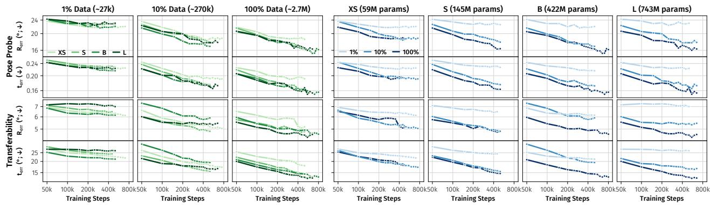

RayDer: Scalable Self-Supervised Novel View Synthesis from Real-World Video Ulrich Prestel, Stefan Andreas Baumann, Nick Stracke, Björn Ommer；机构信息 arXiv 元数据未列出。 arXiv + project 原文链接
(a) Camera Estimation same model (b) Novel View Synthesis Figure 8: Final Architecture Ove(a) Camera Estimation same model (b) Novel View Synthesis Figure 8: Final Architecture Overview. RayDer unifies camera estimation (a) and novel view synthesis (b) in a single transformer backbone. Lightweight local intra-frame encoder and decoder layers handle high-resolution processing.这张图概括 RayDer 的整体方法流程。阅读时先看模块之间传递的训练信号，再看作者如何把目标拆成可优化的子问题。

Figureure 13 · : Learned Camera Geometry Scales with Data, Model Size, and ComputeFigure 13: Learned Camera Geometry Scales with Data, Model Size, and Compute. We track the four continuous camera pose errors – rotation and translation, each read out both via a probe on the camera tokens (RayZer [28] protocol; top rows) and via cross-scene transfer (XFactor [46] protocol; bottom rows) – as a function of training compute, evaluated zero-shot on DL3DV-10K [40]. Left: all errors decrease consistently with training data scale. Right: all errors decrease with model scale, with insufficient data again imposing a strong ceiling. Notably, there is no significant saturation at scale, indicating that further scaling will likely be beneficial.这张图来自论文 PDF 的结构化抽取。当前用于辅助理解 RayDer 的方法或实验，请结合正文精读段落一起看。